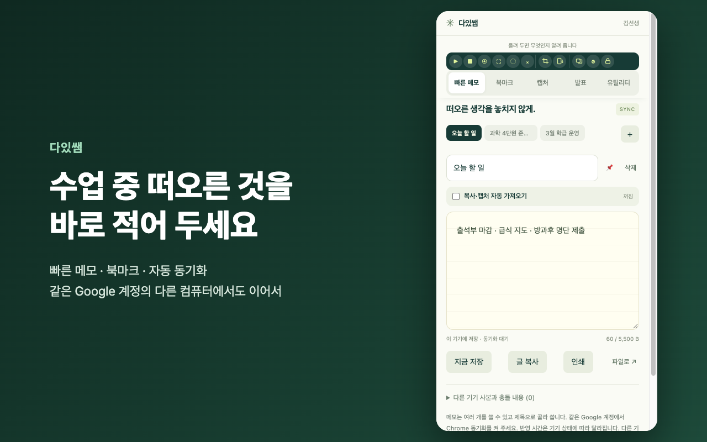
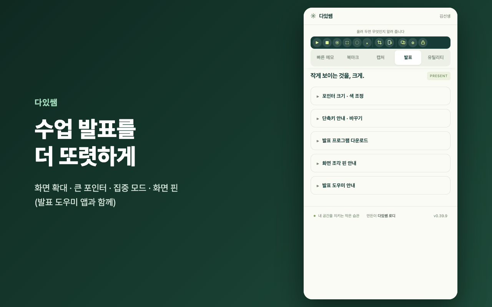
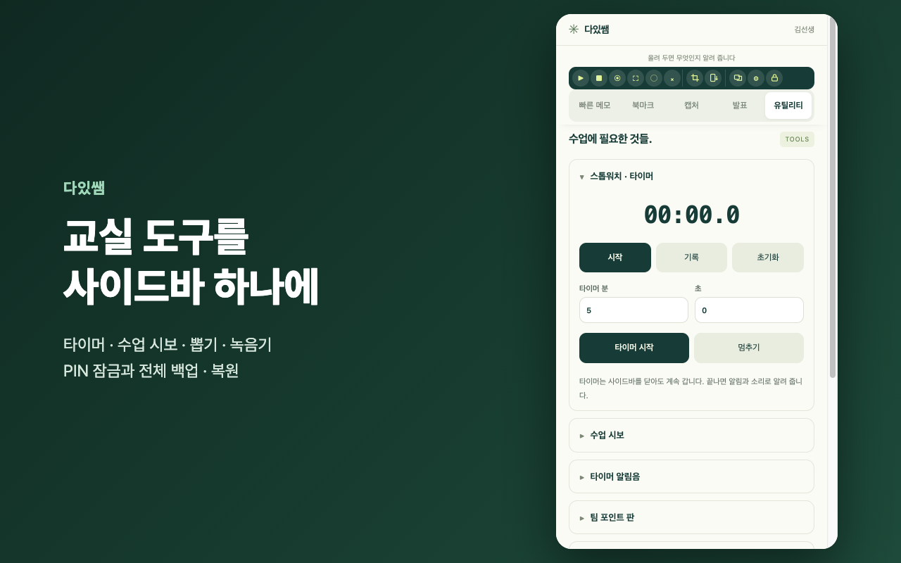
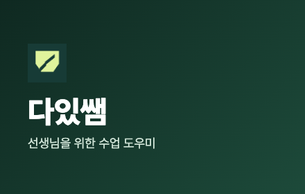

크롬 웹 스토어 등록 안내
개발자 대시보드(chrome.google.com/webstore/devconsole) → 다있쌤 항목을 열고, 왼쪽 메뉴를 위에서부터 차례로 채우면 됩니다. 각 칸 옆 복사를 누르고 대시보드 칸에 붙여 넣으세요. 이 폴더(store)에 필요한 그림이 모두 들어 있습니다.
1. 패키지
왼쪽 메뉴 패키지
이미 올리셨습니다(browser-sheriff-store-0.39.9.zip). 버전이 0.39.9 로 보이면 됩니다.
2. 스토어 등록정보
왼쪽 메뉴 스토어 등록정보 → 화면 위 언어가 한국어인지 확인
이름 · 요약zip 안의 정보로 자동으로 채워집니다(이름 ‘다있쌤’, 요약 ‘프로필 오사용 방지, 동기화 메모, 폴더 북마크, 발표 도우미, 수업 유틸리티’). 바꿀 필요 없습니다.
카테고리교육을 고르세요. (없으면 ‘생산성 → 도구’)
언어한국어
그래픽 저작물
 스토어 아이콘(128×128) → icon-128.png
스토어 아이콘(128×128) → icon-128.png

스크린샷 1 → screenshot-1-memo.png
 스크린샷 2 → screenshot-2-capture.png
스크린샷 2 → screenshot-2-capture.png

스크린샷 3 → screenshot-3-present.png

스크린샷 4 → screenshot-4-tools.png

작은 홍보 타일(440×280) → promo-small-440x280.png
스크린샷 칸에 네 장을 차례로 끌어다 놓으세요. ‘마키 홍보 타일(1400×560)’과 ‘홍보 동영상’은 비워 둬도 됩니다.
공식 URL · 홈페이지 URL · 지원 URL비워 둬도 됩니다.
성인용 콘텐츠아니요
맨 위 오른쪽 초안 저장을 누르세요.
3. 개인정보처리방침 (먼저 주소를 만들어야 합니다)
저장소가 공개되어 아래 주소를 그대로 쓰면 됩니다. Google 문서는 필요 없습니다.
(다른 방법: Google 문서에 아래 글을 붙여 넣고 파일 → 공유 → 웹에 게시)
- docs.google.com 에서 새 문서를 만들고 아래 글을 붙여 넣습니다.
- 메뉴 파일 → 공유 → 웹에 게시 → 게시를 누릅니다.
- 나온 주소(https://docs.google.com/document/d/e/…/pub)를 복사해 두세요. 4번에 씁니다.
4. 개인정보 보호 관행
왼쪽 메뉴 개인정보 보호 관행 (영어로 써야 검토가 빠릅니다 — 그대로 복사하세요)
권한별 사유 — 대시보드에 보이는 권한 이름에 맞춰 붙여 넣으세요.
| storage | |
| alarms | |
| idle | |
| declarativeNetRequest | |
| scripting | |
| clipboardWrite | |
| sidePanel | |
| nativeMessaging | |
| offscreen | |
| notifications | |
| desktopCapture | |
| tabCapture | |
| 호스트 권한 (<all_urls>) | |
원격 코드를 사용하나요? → 아니요, 원격 코드를 사용하지 않습니다
데이터 사용 — 수집하는 사용자 데이터
모든 항목을 체크하지 마세요. (메모·설정은 사용자의 Chrome 에만 저장되고 개발자에게 오지 않으므로 ‘수집’이 아닙니다.)
아래 세 가지 인증 → 세 칸 모두 체크
· 승인된 용도 외에 제3자에게 판매·전송하지 않음 · 단일 목적과 무관한 용도로 쓰지 않음 · 신용 평가·대출 목적으로 쓰지 않음
개인정보처리방침 URL → 3번에서 복사한 주소
초안 저장.
5. 배포
왼쪽 메뉴 배포
결제무료
공개 상태 둘 중 하나:
- 미등록(Unlisted) — 링크를 아는 사람은 누구나 설치, 검색에는 안 나옴. 나눠 주기 편해서 추천.
- 비공개(Private) — 아래 ‘신뢰할 수 있는 테스터’에 적은 Google 계정만 설치. 이메일을 쉼표로 나눠 적습니다(본인 janhan97@gmail.com 포함).
배포 지역모든 지역
초안 저장.
6. 제출
오른쪽 위 검토를 위해 제출. 빠진 칸이 있으면 빨간 글씨로 알려 주니 그 칸만 채우고 다시 누르세요.
- ‘검토 후 자동 게시’는 켜 두면 통과하자마자 링크가 열립니다.
- 검토는 보통 며칠, 권한이 많아 더 걸릴 수 있습니다. 추가 질문 메일이 오면 내용을 Claude 에게 보여 주세요.
- 통과 후 설치 주소: https://chromewebstore.google.com/detail/cgefngalkalghipmhijniclmlpimpmhf
발표 도우미 앱은 스토어에 올릴 수 없습니다. 스토어 판 사용자는 사이드바 ‘발표 프로그램 다운로드’로 공개 GitHub 릴리스에서 받습니다.